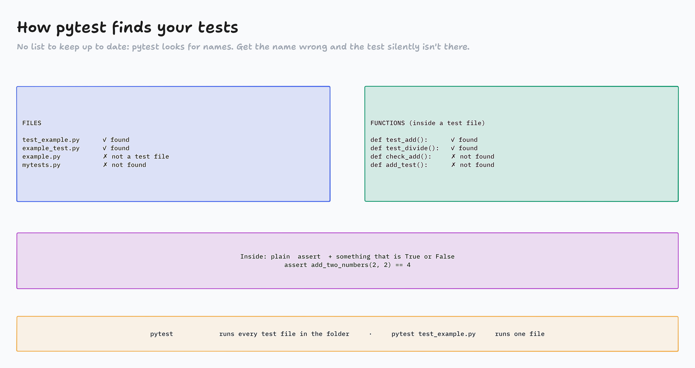

Write the test first
Test Driven Development with pytest: watch a test fail, make it pass, then clean up. All of it typed and run live.
How did you know your code worked?
- Yesterday's homework specs print
true/false - A
falsetold you that something broke, not what - Today: tests that tell you what broke
- And we write the test first, then the code
![Red, Green, Refactor: the test comes first. Red: write a test for code that doesn't exist yet; pytest fails. Green: write the minimum code to make it pass; pytest passes. Refactor: clean the code up; pytest still passes. Then the next feature starts at red again. Example: test_example.py asserts add_two_numbers(2, 2) == 4, which is red with an ImportError because there is no function yet; example.py defines add_two_numbers, which is green with 1 passed. If you never saw it fail, you don't know the test can catch a bug.](../diagrams/TD1-01-red-green-refactor.png)
Why write tests first?
Reliability
The code does what the test says, so fewer bugs ship.
Documentation
A test shows exactly how the code should be used.
Maintainability
Refactor without fear: the tests catch what you break.
Collaboration
Many people change one codebase with confidence.
Regression
An old bug that comes back fails a test right away.
The test is the requirement, written as code.
Meet pytest
1 · Install it (in your own terminal)
pip install pytest pytest --version
If pip fails, use pip3.
2 · A folder for today
mkdir tdd-pytest cd tdd-pytest code .
- Test functions are plain Python functions. Checks are plain
assert. - pytest finds tests by their names, and has plugins for reports, coverage and CI.

Red first, then green test_example.py · example.py
![Reading pytest: one character per test, then the story. Example output: collected 4 items; test_example.py one dot at 25 percent; test_assertions.py dot dot F at 100 percent; a FAILURES section for test_shopping_list with the failing line marked by a greater-than sign and E lines showing the AssertionError and that the right side contains one more item, jam; and the summary 1 failed, 3 passed. Key: a dot is passed, F is failed because the assert was False, E is an error that crashed before testing. Exit code with echo $?: 0 all passed, 1 some failed, 2 error or interrupted, 5 no tests found. Computers read the exit code: a CI pipeline blocks your merge when it isn't 0.](../diagrams/TD1-03-reading-pytest.png)
Activity: Pass, fail, or not found?
- A test file and a test appear
- In chat on "go": PASS, FAIL or NOT FOUND
- NOT FOUND = pytest never runs it
Page: activity-pass-fail-not-found/
Assertions: anything True or False test_assertions.py · test_shopping.py
Fake the keyboard, catch the screen test_input.py · test_print.py
The same tests, in a container
Dockerfile (in tdd-pytest/)
FROM python:3.11-slim WORKDIR /app COPY . . RUN pip install --no-cache-dir pytest CMD ["pytest"]
- RUN runs while building the image (install things). You can have many.
- CMD runs when the container starts. Here: the test suite, once.
--no-cache-dir: pip doesn't save a copy of its downloads → a smaller image
docker build -t pytest-tests . docker run --rm pytest-tests echo $?
Same Python, same pytest, on every laptop and in CI. Exit code 0 = green.
Run the tests in Docker example.py · test_example.py · Dockerfile
Homework, Part I
Top to bottom: each one is a little harder.
- Roman Numerals (Python):
pytest test_roman_numerals.py, then add your own tests - Linear Search (Python):
pytest test_linear_search.py, then add tests forlinear_search_global
Work the TDD way
Run the tests first and watch them fail. Make one pass at a time. Then add a test for an edge case before you handle it.